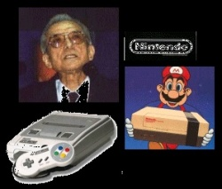
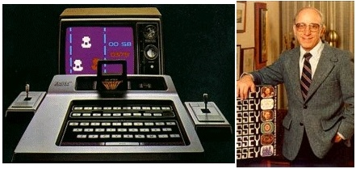

Durante bastante tiempo ha sido complicado señalar cual fue el primer videojuego, principalmente debido a las múltiples definiciones de este que se han ido estableciendo, pero se puede considerar como primer videojuego el Nought and crosses, también llamado OXO, desarrollado por Alexander S.Douglas en 1952. El juego era una versión computerizada del tres en raya que se ejecutaba sobre la EDSAC y permitía enfrentar a un jugador humano contra la máquina.
1970-1979: La eclosión de los videojuegos
Un hito importante en el inicio de los videojuegos tuvo lugar en 1971 cuando Nolan Bushnell comenzó a comercializar Computer Space, una versión de Space War, aunque otra versión recreativa de Space War como fue Galaxy War puede que se le adelantara a principios de los 70 en el campus de la universidad de Standford.
La ascensión de los videojuegos llegó con la mêquina recreativa Pong que es considerada la versión comercial del juego Tennis for Two de Higginbotham. El sistema fue diseñado por Al Alcom para Nolan Bushnell en la recién fundada Atari.
1980-1989: La década de los 8 bits
Los años 80 comenzaron con un fuerte crecimiento en el sector del videojuego alentado por la popularidad de los salones de máquinas recreativas y de las primeras videoconsolas aparecidas durante la década de los 70.
Durante estos años destacan sistemas como Oddyssey 2 (Phillips), Intellivision (Mattel), Colecovision (Coleco), Atari 5200, Commodore 64, Turbografx (NEC). Por otro lado en las máquinas recreativas triunfaron juegos como el famoso Pacman (Namco), Battle Zone (Atari), Pole Position (Namco), Tron (Midway) o Zaxxon (Sega).
En 1985 apareció Super Mario Bros, que supuso un punto de inflexión en el desarrollo de los juegos electrónicos, ya que la mayoría de los juegos anteriores sólo contenían unas pocas pantallas que se repetían en un bucle y el objetivo simplemente era hacer una alta puntuación. El juego desarrollado por Nintendo supuso un estallido de creatividad. Por primera vez teníamos un objetivo y un final en un videojuego. En los años posteriores otras compañías emularon su estilo de juego.
Otra rama de los videojuegos que creció con fuerza fue la de los videojuegos portátiles. Estos comenzaron a principios de los 70 con los primeros juegos completamente electrónicos lanzados por Mattel, los cuales difícilmente podían considerarse como videojuegos, y fueron creciendo en popularidad gracias a conversiones de recreativas como las realizadas por Coleco o adictivos microjuegos como las Game & Watch de Nintendo. La evolución definitiva de las portátiles como plataformas de videojuego llegó en 1989 con el lanzamiento de la Game Boy (Nintendo).
1990-1999: La revolución de las 3D
A principios de los años 90 las videoconsolas dieron un importante salto técnico gracias a la competición de la llamada "generación de 16 bits" compuesta por la Mega Drive, la Super Nintendo Entertainmet de Nintendo, la PC Engine de NEC, conocida como Turbografx en occidente y la CPS Changer de (Capcom).
Junto a ellas también apareció la Neo Geo (SNK) una consola que igualaba las prestaciones técnicas de un arcade pero demasiado cara para llegar de forma masiva a los hogares.
Esta generación supuso un importante aumento en la cantidad de jugadores y la introducción de tecnologías como el CD-ROM, una importante evolución dentro de los diferentes géneros de videojuegos, principalmente gracias a las nuevas capacidades técnicas.
La consola de Sony apareció tras un proyecto iniciado con Nintendo (denominado SNES PlayStation), que consistía en un periférico para SNES con lector de CD. Al final Nintendo rechazó la propuesta de Sony, puesto que Sega había desarrollado algo parecido sin tener éxito, y Sony lanzó independientemente PlayStation.
Por su parte los arcades comenzaron un lento pero imparable declive según aumentaba el acceso a consolas y ordenadores más potentes.
Hacia finales de la década la consola más popular era la PlayStation con juegos como Final Fantasy VII (Square), Resident Evil (Capcom), Winning Eleven 4 (Konami), Gran Turismo (Polyphony Digital) y Metal Gear Solid (konami). 
Desde el 2000: El comienzo del nuevo siglo
En el 2000 Sony lanzó la anticipada PlayStation 2 y Sega lanzó otra consola con las mismas características técnicas de la Dreamcast, nada más que venia con un monitor de 14 pulgadas, un teclado, altavoces y los mismos mandos llamados Dreamcast Drivers 2000 Series CX-1.
Microsoft entra en la industria de las consolas creando la Xbox en 2001.
Nintendo lanzó el sucesor de la Nintendo 64, la Gamecube, y la primera Game Boy completamente nueva desde la creación de la compañía, la Game Boy Advance. Sega viendo que no podría competir, especialmente con una nueva máquina como la de Sony, anunció que ya no produciría hardware, convirtiéndose sólo en desarrolladora de software en 2002.
El ordenador personal PC es la plataforma más cara de juegos pero también la que permite mayor flexibilidad. Esta flexibilidad proviene del hecho de poder añadir al ordenador componentes que se pueden mejorar constantemente, como son tarjetas gráficas o de sonido y accesorios como volantes, pedales y mandos, etc. Además es posible actualizar los juegos con parches oficiales o con nuevos añadidos realizados por la compañía que creó el juego o por otros usuarios. 